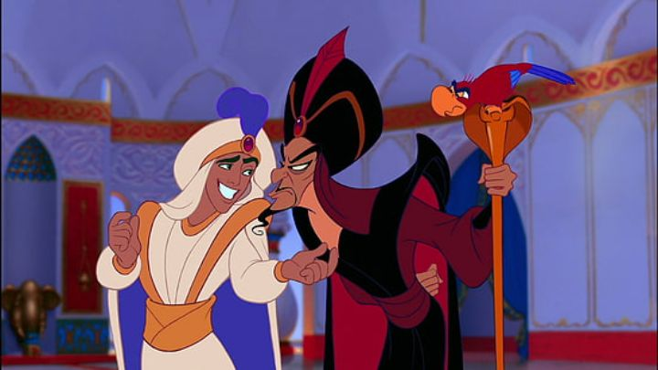

"Aladdin" is one of the tetraology of Disney Renaissance films attributed to the success of the company back in the 1990's. From appearances though, it stands out for being a little different, as it leans heavily into modern pop-culture references and showbiz-spectacle instead of the more "classical" style of "The Little Mermaid" and "Beauty and the Beast." Apparently, the idea to make it a flashy and colorful showtunes musical was planned early on, but it was probably the casting and recording of Robin Williams, the voice of the Genie, that defined the slapdash tone of the movie across the board. And that modern sense of humor would be a defining style for Disney late in the renaissance, to its detriment. Indeed, Robin's star power was the biggest voice yet seen in a Disney movie (as well as Gilbert Gottfried's recognizable voice as Iago), and similarly large actors would continue to be relied on for later villains and side characters in future movies. It's a shame that he overshadows a lot of the other strong points, like the consistently fun songs, and Jafar, one of Disney's more memorable villains. Of course, America has never been good at representing Middle-Eastern cultures without some controversy, and that's true with the cartoonish-portrayal of the made-up kingdom of Agrabah (there were even minor lyrical changes immediately after the threatrical release to edit some of the more explicit issues). The setting in "Aladdin" might not be mean-spirited, and will probably just bee seen as a fun cartoon to children and familes, but it's so much a part of the style to the movie that it's impossible to overlook. There's also a ton of design similarities to Richard Williams' in-development film "The Thief and the Cobbler." Despite being in development longer, since "Aladdin" came out first, my child-self assumed "Cobbler" was a cheap rip-off of the Disney movie, and not the other way around, leading to that movie's poor performance and reputation to anyone outside the industry for years. In this version of the "Aladdin" tale, the title character is a "street-rat," a fast-talking beggar frequently outwitting the local guards to escape with food for himself and his pet monkey Abu. In the royal palace, Princess Jasmine has an opposite issue, wanting but nothing but her freedom to explore outside the palace walls. She escapes for a day, and Aladdin helps introduce her to the town through the back alleys, forming a natural romantic spark early on. But Aladdin's troubles get worse when he's tricked by the royal vizier, Jafar (and a wise-crackng parrot called Iago), to find a magic lamp that would grant him a chance to overthrow the Sultan and take the throne for himself. Aladdin does find the lamp, and the powerful magic Genie trapped inside, who's laws require he fullfill three wishes to the lamp's new owner. Aladdin uses this new power to try to redefine himself as a Prince, in hopes of escaping poverty, marrying Jasmine, and finding his own happily-ever-after.The core story works fine, but the writing is more influenced by the characters and their bigger-than-life personalities than a complicated plot. Aladdin himself is a fun new archtype for a male Disney protagonist, street-smart and able to crack a joke like a confident teenager. Jasmine's wish for freedom is understandable, but feels like a copy from other recent Disney princesses, and she doesn't get a whole lot to do beyond pine for Aladdin, since its his story after all (except for her contributing to save the day during the climax, through flirting, which poses its own problems). Therefore, the rest of the story is filled with the musings of the Genie and Jafar, which is at least plenty entertaining. Even if the story was a little weaker, this was probably the biggest action-adventure from Disney yet, and the action and comedy together make it the most fun. The movie really wakes up when the Genie enters the picture though, about 30 minutes into the movie. Even as a kid, I knew that was when things got good. Robin Williams' Genie is like listening to the comdedian do an ad-libbed family-friendly stand-up performance (which was effectively what the recording studio got, giving the animators a lot to play with). It's full of modern pop-culture references, including impersonations of famous people, and jabs at companies like Disney itself and some of its prior movies. It's a tradeoff, but might have been worthwhile for the fun roller coaster of a movie we get. Even from other characters outside the Genie, "Aladdin" is remarkably funny, especially for young children.The animation quality is arguably the best we've gotten yet from Disney, as is the bold color pallette. But there's something about the environment design that bothered me: there's a lot of wide-open, empty spaces in the deserts sands, caves, and palaces. In the caves especially, you'd think there'd at least be more rocks? I assume this was a problem from the production's quick turn-around time, enforced under studio head Jeffrey Katzenberg (at this point, he'd gotten a bad reputation for stressful timelines in order to release a new movie each year, while also enforcing cuts and edits as a producer). In exchange for lower environments, we get great character designs and character animation to make up for it. Not only did I watch "Aladdin" on Disney Plus, but it was one of the first of the older (pre-2005) Disney movies that I watched on Bluray disc. The colors, filled with reds and oranges and deep blues, really pop off the screen unlike any of Disney's prior movies. But some of the darker night scenes, especially in the second half, crush colors to the point that pixelation distracts from the experience. Likewise, with so many shades of red, there are a few scenes where it's hard to make out a character from the background. Curiously, this over-saturation is based on the Bluray disc on my television, and these were not issues on Disney Plus and my weaker laptop display, albiet with a lack of color pop. I have no idea whether this is a re-colorization between the HD and 4K sources, between full quality and compressed streaming quality, or if my TV was really so poorly callibrated, but my point is that this can be a fickle picture, and your experience may vary. Matching the fun of the visuals and humor, we get a bunch of bombastic songs ("One Jump Ahead," "Prince Ali"), as well as a few quieter moments, like the classic love song "A Whole New World." Again, these have a more modern flair, something you might have expected on a modern Broadway musical, compared to an older stage production. It's a little different from what we had recently gotten, focusing on solo vocals instead of dancing choirs, but the songs still hold up great. I'd rate the voice acting a bit stronger than the music, for being strong across the board for everyone, not just the Genie or Jafar or Iago. "Aladdin" also has a ton of easter eggs, not just to past Disney movies, but seemigngly pointing to future movies like "Hercules" and "Mulan," with glimpses that look almost spot on to the worlds we'd get years later. Disney's artists and writers were at their peak, but they were also possibly starting to show signs of cracking, and a direction to play more to low-attention-span children. In a way, this signalled a peak before a fall.
- "Ani" More reviews can be found at : https://2danicritic.github.io/ Previous review: review_Akira Next review: review_Alice_and_Zoroku